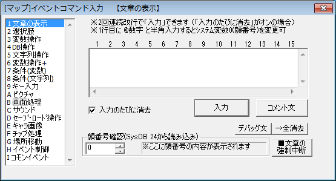

【コマンド入力ウィンドウ】

各種イベントコマンドを入力する際に使用します。
各コマンドの詳細は左フレームの○イベントコマンド一覧を参照してください。
ここではイベントコマンド入力ウィンドウ共通の内容を説明します。
[ ショートカットキー ]
・イベントコマンド挿入ウィンドウ内のみのショートカットキー
Ctrl+Enter：現在のコマンドを挿入します
Alt+↑↓：選択中のイベントコマンド種類を切り替えます
Alt+1～9、A～Z：対応するイベントコマンド種類に飛びます
・イベントウィンドウ＆イベントコマンド挿入ウィンドウ
Ctrl+S：マップまたはコモンイベントを保存します
Ctrl+T または F9：テストプレイを開始します
Ctrl+↑↓：イベントコマンドのカーソル位置を上下に移動します
Ctrl+Alt+↑↓：読み込むマップイベント、コモンイベント番号を変更します
Ctrl+R：直前にいじったイベント/コモンイベントへ飛びます
[ イベントコマンド種類 ]
イベントコマンド種類の並び順およびショートカットキーはエディターオプションから変更することが出来ます。
エディターオプションはメニューのオプションの中にあります。
詳しくはゲーム設定のエディターオプション欄参照。